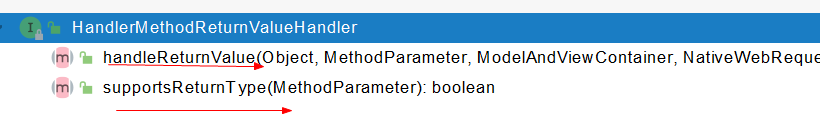

SpringBoot2-Web开发-数据响应与内容协商
11 12, 2021
SpringBoot Web开发 数据响应与内容协商 1. 响应JSON jackson.jar + @ResponseBody 1 2 3 4 5 6 7 8 9 10 11 12 <dependency > <groupId > org.springframework.boot</groupId > <artifactId > spring-boot-starter-web</artifactId > </dependency > web场景自动引入了json场景 <dependency > <groupId > org.springframework.boot</groupId > <artifactId > spring-boot-starter-json</artifactId > <version > 2.3.4.RELEASE</version > <scope > compile</scope > </dependency >
给前端自动返回JSON数据
1 2 3 4 try { this .returnValueHandlers.handleReturnValue( returnValue, getReturnValueType(returnValue), mavContainer, webRequest); }
1 2 3 4 5 6 7 8 9 10 @Override public void handleReturnValue (@Nullable Object returnValue, MethodParameter returnType, ModelAndViewContainer mavContainer, NativeWebRequest webRequest) throws Exception { HandlerMethodReturnValueHandler handler = selectHandler(returnValue, returnType); if (handler == null ) { throw new IllegalArgumentException ("Unknown return value type: " + returnType.getParameterType().getName()); } handler.handleReturnValue(returnValue, returnType, mavContainer, webRequest); }

（1）返回值处理器判断是否支持这种类型的返回值: supportsReturnType()
（2）如果支持，返回值处理器调用handleReturnValue()进行处理
（3）举例：RequestResponseBodyMethodProcessor可以处理返回值标注了@ResponseBody注解的
1 2 3 4 5 6 7 8 9 10 11 12 13 14 @Override public void handleReturnValue (@Nullable Object returnValue, MethodParameter returnType, ModelAndViewContainer mavContainer, NativeWebRequest webRequest) throws IOException, HttpMediaTypeNotAcceptableException, HttpMessageNotWritableException { mavContainer.setRequestHandled(true ); ServletServerHttpRequest inputMessage = createInputMessage(webRequest); ServletServerHttpResponse outputMessage = createOutputMessage(webRequest); writeWithMessageConverters(returnValue, returnType, inputMessage, outputMessage); }
（1）利用MessageConverters进行处理 将数据写为JSON
（1.1）内容协商：浏览器默认会以请求头的方式告诉服务器它能接收什么样的内容类型
（1.2）服务器最终根据自己自身的能力，决定服务器能生产出什么样类型的数据
（1.3）SpringMVC会遍历所有容器底层的HttpMessageConverter，看谁能处理
（1.3.1）遍历得到MappingJackson2HttpMessageConverter
（1.3.2）利用MappingJackson2HttpMessageConverter将对象转为JSON再写出去
SpringMVC支持哪些返回值 1 2 3 4 5 6 7 8 9 10 11 12 13 14 15 ModelAndView Model View ResponseEntity ResponseBodyEmitter StreamingResponseBody HttpEntity HttpHeaders Callable DeferredResult ListenableFuture CompletionStage WebAsyncTask 返回值有@ModelAttribute 注解且为对象类型的 标注了@ResponseBody 注解的
HttpMessageConverter原理
HttpMessageConverter: 看是否支持将此Class类型的对象，转为MediaType类型的数据
例子：将Person对象转为JSON（write,响应）/ 将JSON转为Person（read,请求）（可逆的）
0 - 只支持Byte类型的
1 - String
2 - String
3 - Resource
4 - ResourceRegion
5 - DOMSource.class / SAXSource.class / StAXSource.class / StreamSource.class / Source.class
6 - MultiValueMap
7 - 返回true
8 - 返回true
9 - 支持注解方式xml处理的
最终MappingJackson2HttpMessageConverter利用底层的jackson的objectMapper把对象转为JSON
2.内容协商 根据客户端接收能力不同，返回不同媒体类型的数据
引入xml依赖 1 2 3 4 <dependency > <groupId > com.fasterxml.jackson.dataformat</groupId > <artifactId > jackson-dataformat-xml</artifactId > </dependency >
开启浏览器参数方式内容协商功能 为了方便内容协商，开启基于请求参数的内容协商功能
1 2 3 spring: contentnegotiation: favor-parameter: true
发送请求时可以选择转换为哪种类型：
确定客户端接收什么样的内容类型
Parameter策略优先确定是要返回JSON数据（根据下图方法，获取请求中format的值，确定要返回JSON）
内容协商原理 （1）判断当前响应头中是否已经有确定的媒体类型MediaType
（2）获取客户端（浏览器）支持接受的内容类型（获取客户端Accept请求头字段)
contentNegotiationManager 内容协商管理器 默认使用基于请求头的策略
调用HeaderContentNegotiationStrategy()方法确定客户端可以接收的内容类型
（3）遍历循环所有当前系统的MessageConverter，看谁支持操作这个对象
（4）找到支持操作这个对象的Converter，把Converter支持的媒体类型统计出来
（5）例子中，客户端需要application/xml，服务器端通过统计，发现能处理以下10种类型
（6）遍历循环，进行内容协商的最佳匹配，找出匹配的媒体类型
（7）调用支持将对象转为最佳匹配的媒体类型的Converter进行转换
只要导入了jackson处理xml的包，xml的converter就会自动进来
1 2 3 4 5 6 7 8 9 10 jackson2XmlPresent = ClassUtils.isPresent("com.fasterxml.jackson.dataformat.xml.XmlMapper" , classLoader); if (jackson2XmlPresent) { Jackson2ObjectMapperBuilder builder = Jackson2ObjectMapperBuilder.xml(); if (this .applicationContext != null ) { builder.applicationContext(this .applicationContext); } messageConverters.add(new MappingJackson2XmlHttpMessageConverter (builder.build())); }
自定义MessageConverter 实现多协议数据兼容：
1 2 3 4 5 6 7 8 9 10 11 12 13 14 15 16 17 18 19 20 21 @ResponseBody @GetMapping(value = "/test/person") public Person getPerson () { Person person = new Person (); person.setAge(28 ); person.setBirth(new Date ()); person.setUsername("ye" ); return person; }
一切SpringMvc的自定义都在WebMvcConfigurer组件中进行配置
通过改变请求头中的Accept字段进行内容协商写多个数据
1 2 3 4 5 6 7 8 9 10 11 12 13 14 15 16 17 18 19 20 21 22 23 24 25 26 27 28 29 30 31 32 33 34 35 36 public class YeMessageConverter implements HttpMessageConverter <Person>{ @Override public boolean canRead (Class<?> clazz, MediaType mediaType) { return false ; } @Override public boolean canWrite (Class<?> clazz, MediaType mediaType) { return clazz.isAssignableFrom(Person.class); } @Override public List<MediaType> getSupportedMediaTypes () { return MediaType.parseMediaTypes("application/x-ye" ); } @Override public Person read (Class<? extends Person> clazz, HttpInputMessage inputMessage) throws IOException{ return null ; } @Override public Person write (Person person, MediaType contentType, HttpOutputMessage outputMessage) throws IOException{ String data = person.getUsername() + ";" + person.getAge() + ";" + person.getBirth(); OutputStream body = outputMessage.getBody(); body.write(data.getBytes()); } }
1 2 3 4 5 6 7 8 9 10 @Bean public WebMvcConfigurer webMvcConfigurer () { return new WebMvcConfigurer () { @Override public void extendMessageConverters (List<HttpMessageConverter<?>> converters) { converters.add(new YeMessageConverter ()); } } }
1 2 3 4 5 6 7 8 9 10 11 12 13 14 15 16 17 18 19 @Bean public WebMvcConfigurer webMvcConfigurer () { return new WebMvcConfigurer () { @Override public void configureContentNegotiation (ContentNegotiationConfigurer configurer) { Map<String, MediaType> mediaTypes = new HashMap <>(); mediaTypes.put("json" ,MediaType.APPLICATION_JSON); mediaTypes.put("xml" ,MediaType.APPLICATION_XML); mediaTypes.put("ye" ,MediaType.parseMediaType("application/x-ye" )); ParameterContentNegotiationStrategy parameterStrategy = new ParameterContentNegotiationStrategy (mediaTypes); HeaderContentNegotiationStrategy headerStrategy = new HeaderContentNegotiationStrategy (); congifurer.strategies(Arrays.asList(parameterStrategy, headerStrategy)); } } }
这样一来，就可以在访问时通过改变请求参数进行内容协商：